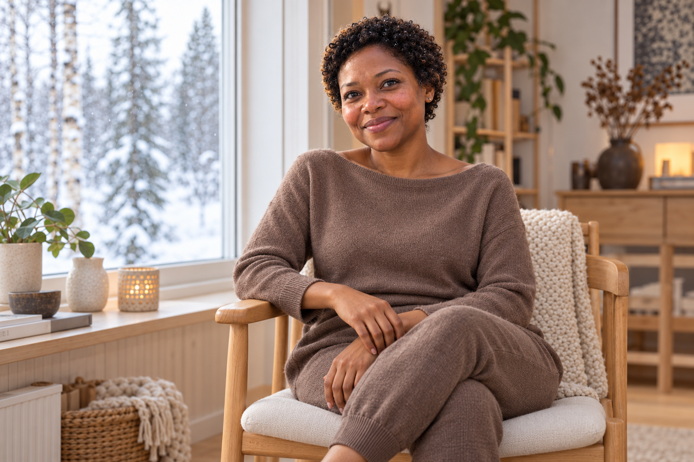

Fotograferingar
Porträtt, familjebilder och bilder för småföretag. Här kan du läsa mer om de olika fotograferingarna och hur en förfrågan går till.
Porträttfotografering

Ett porträtt med fokus på dig. Fotograferingen planeras efter hur bilderna ska användas och vilket uttryck du vill förmedla.
Berätta gärna om du önskar en lugn inomhusmiljö eller vill fotograferas utomhus.
Familjefotografering

Bilder av er tillsammans, med utrymme för rörelse, närhet och de små ögonblicken. Fotograferingen anpassas efter familjen.
I förfrågan kan du beskriva vilka som ska vara med och vilken miljö som passar er.
Företagsfotografering

Visa människorna, arbetet och detaljerna bakom din verksamhet. Bilderna planeras utifrån företagets uttryck och behov.
Berätta om verksamheten och om bilderna ska användas på webbplatsen, i sociala medier eller i annat material.
Så går det till
- Skicka en förfrågan. Beskriv vilken fotografering du är intresserad av och dina önskemål.
- Planera tillsammans. Vi kommer överens om tid, plats och upplägg innan fotograferingen.
- Dags att fotograferas. Fotograferingen utgår från det vi har planerat tillsammans.